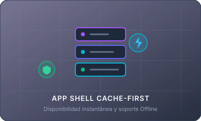

Cache API & App Shell con Cache-First
Esta aplicación implementa la interceptación de peticiones mediante Service Worker. Los recursos estáticos del núcleo (HTML, CSS, JS e imágenes) se almacenan en caché durante el evento install y se despachan primero desde la memoria caché ante cualquier solicitud de red.

Pilares de la Implementación
1. Evento install
Durante la instalación del Service Worker, se abre la memoria caché mediante caches.open('app-shell-v1') y se realiza el pre-cacheo con cache.addAll().
event.waitUntil(caches.open(...))
2. Almacenamiento App Shell
Se preservan los recursos estáticos esenciales: HTML estructural, hojas de estilo CSS, scripts JavaScript de la aplicación e imágenes vectoriales base (SVG).
['index.html', 'style.css', 'app.js', ...]
3. Intercepción fetch
Estrategia Cache-First: intercepta las peticiones con caches.match(). Si el recurso está en memoria se devuelve inmediatamente; de lo contrario acude a la red.
caches.match(req) || fetch(req)
Inspector de Memoria Caché en Vivo
Consulta en tiempo real el contenido almacenado en la Cache API del navegador para el App Shell.
| Recurso del App Shell | Tipo | Estado en Cache API | Acción de Prueba |
|---|---|---|---|
| Explorando Cache API... | |||
Simular Petición a Recurso del App Shell
Prueba cómo el Service Worker intercepta un recurso precacheado y lo sirve desde caché a velocidad ultrarrápida.
Comprobación de Funcionamiento Offline
Puedes desconectar tu conexión a Internet o activar el modo Offline en la pestaña Network de DevTools y recargar la página. ¡El App Shell seguirá funcionando!